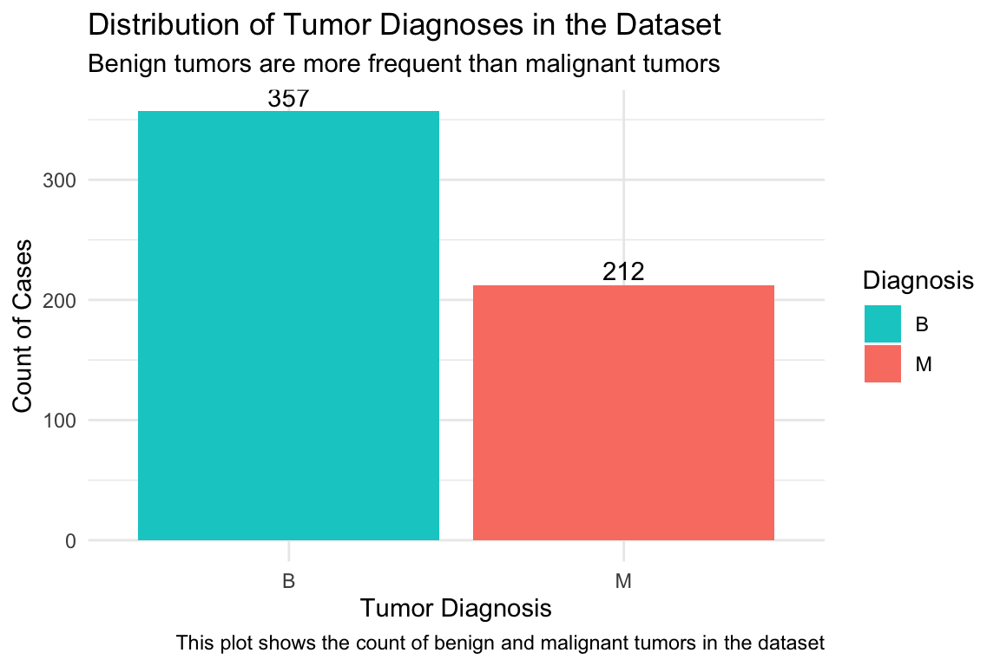
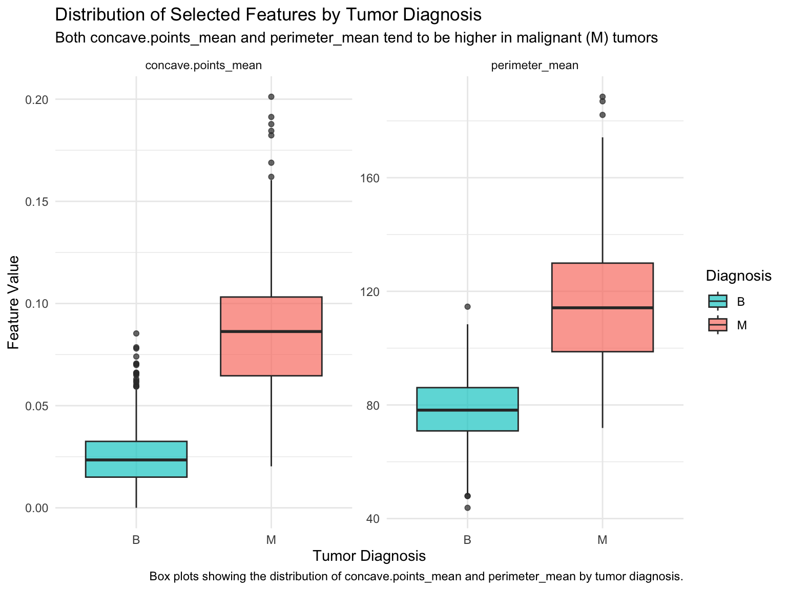
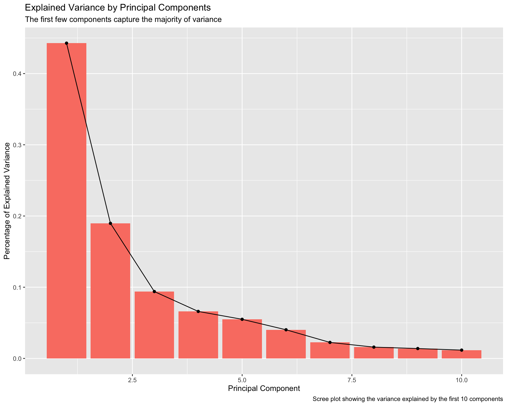

This analysis investigates the Breast Cancer Wisconsin (Diagnostic) dataset to determine which features are most effective in distinguishing malignant from benign tumors. Specifically, we aim to answer the question: What variables are most influential in predicting breast cancer diagnosis?
This analysis is intended for medical researchers and clinicians interested in exploring diagnostic features that can assist in early detection and classification of breast cancer tumors. The dataset was originally collected by Dr. William H. Wolberg and is available from the UCI Machine Learning Repository(Wolberg and Mangasarian 1993).
A complete data dictionary is provided below.
Note
This analysis provides insights into diagnostic features in breast cancer, potentially guiding more advanced machine learning models.
2 Data Dictionary
Variable
Description
id
Unique identifier for each patient
Diagnosis
Diagnosis of the tumor (M = malignant, B = benign)
radius_mean
Mean radius: mean of distances from center to points on the perimeter
texture_mean
Mean texture: standard deviation of gray-scale values
perimeter_mean
Mean perimeter: mean size of the core tumor perimeter
area_mean
Mean area: mean size of the core tumor area
smoothness_mean
Mean smoothness: local variation in radius lengths
compactness_mean
Mean compactness: calculated as (perimeter^2 / area - 1.0)
concavity_mean
Mean concavity: severity of concave portions of the contour
concave.points_mean
Mean concave points: number of concave portions of the contour
symmetry_mean
Mean symmetry: measure of symmetry of cell nucleus
fractal_dimension_mean
Mean fractal dimension: “coastline approximation” - 1
radius_se
Standard error of radius
texture_se
Standard error of texture
perimeter_se
Standard error of perimeter
area_se
Standard error of area
smoothness_se
Standard error of smoothness
compactness_se
Standard error of compactness
concavity_se
Standard error of concavity
concave.points_se
Standard error of concave points
symmetry_se
Standard error of symmetry
fractal_dimension_se
Standard error of fractal dimension
radius_worst
Worst or largest value of radius (mean of the three largest values)
cor_threshold <-0.3high_corr_vars <- correlations %>%filter(abs(correlation) >= cor_threshold) %>%pull(variable)# Keep only highly correlated variables in the original datadata <- data %>%select(all_of(high_corr_vars), Diagnosis)head(data)
4 Target Variable Distribution
This bar plot shows the distribution of benign and malignant diagnoses in the dataset.
Show code
# Plot the distribution of tumor diagnosesggplot(data, aes(x = Diagnosis, fill = Diagnosis)) +geom_bar() +geom_text(stat='count', aes(label=..count..), vjust=-0.3) +labs(title ="Distribution of Tumor Diagnoses in the Dataset",subtitle ="Benign tumors are more frequent than malignant tumors",caption ="This plot shows the count of benign and malignant tumors in the dataset",x ="Tumor Diagnosis",y ="Count of Cases" ) +scale_fill_manual(values =c("B"="#00CCCC", "M"="salmon")) +theme_minimal()

Benign tumors are more common than malignant tumors, providing a slightly imbalanced but sufficient dataset for training.
5 Faceted Plot: Feature Distribution by Diagnosis
This faceted histogram compares the distribution of radius_mean between benign and malignant tumors.
Show code
# Compare the distribution of 'radius_mean' across diagnoses using facetingggplot(data, aes(x = radius_mean, fill = Diagnosis)) +geom_histogram(binwidth =0.5, alpha =0.7, position ="identity") +facet_wrap(~ Diagnosis) +labs(title ="Distribution of Mean Radius by Tumor Diagnosis",subtitle ="Malignant tumors tend to have a larger mean radius",caption ="Faceted histograms showing 'radius_mean' distribution for each diagnosis",x ="Mean Radius",y ="Frequency" ) +scale_fill_manual(values =c("B"="#00CCCC", "M"="salmon")) +theme_minimal()

The faceted histograms reveal that malignant tumors generally have higher mean radius values compared to benign tumors.
6 Correlation Analysis
#| label: correlation
#| fig-height: 10
#| fig-width: 10
#| warning: false
# Compute and visualize correlations among numeric features
correlations <- cor(data %>% select(-Diagnosis), method = "pearson")
corrplot(correlations, number.cex = .6, method = "number", type = "upper", tl.cex=1, tl.col = "black", col = COL2("RdYlBu"))
Summary: Strong correlations are seen among features like radius, perimeter, and area, indicating redundancy that can be reduced.
7 Principal Component Analysis (PCA)
The dataset’s dimensionality was significantly reduced using PCA, which allows the identification and removal of less relevant features without significant loss of information (Hasan and Abdulazeez 2021).
Show code
# Perform PCA for dimensionality reductionpca <-prcomp(data %>%select(-Diagnosis), scale =TRUE)# Variance explained by each componentvar_explained <-data.frame(Component =1:length(pca$sdev), Variance = (pca$sdev)^2, Proportion = (pca$sdev)^2/sum((pca$sdev)^2), Cumulative =cumsum((pca$sdev)^2/sum((pca$sdev)^2)))# Scree Plotggplot(var_explained[1:10,], aes(x = Component, y = Proportion)) +geom_bar(stat ="identity", fill ="salmon") +geom_line(color ="black") +geom_point(color ="black") +labs(title ="Explained Variance by Principal Components",subtitle ="The first few components capture the majority of variance",caption ="Scree plot showing the variance explained by the first 10 components",x ="Principal Component",y ="Percentage of Explained Variance" )

PCA helped identify six components explaining 88.76% of variance.
8 Data Splitting
Show code
# Split the data into training and testing setsset.seed(101)split <-sample.split(data$Diagnosis, SplitRatio =0.8)train <-subset(data, split ==TRUE)test <-subset(data, split ==FALSE)
The training set has 455 samples, and the test set has 114 samples, with consistent diagnosis distribution.
9 Model Training: Random Forest
The Random Forest method works by constructing a large number of decision trees during training and outputting the most common class (Romano, Barbul, and Korenstein 2023). A Random Forest model with 10-fold cross-validation is trained to predict tumor diagnoses based on the dataset features, using 1000 trees.
Show code
# Set up cross-validationcontrol <-trainControl(method ="cv", number =10)# Random Forestrf_model <-train(Diagnosis ~ ., data = train, method ="rf", ntree =1000, trControl = control, importance =TRUE)
10 Model Evaluation
Show code
# Evaluate the Random Forest model on the test setevaluate_model <-function(model, test_data) { predictions <-predict(model, newdata = test_data) cm <-confusionMatrix(predictions, test_data$Diagnosis) auc_value <-auc(roc(test_data$Diagnosis, as.numeric(predictions)))data.frame(Accuracy = cm$overall['Accuracy'],Sensitivity = cm$byClass['Sensitivity'],Specificity = cm$byClass['Specificity'],AUC = auc_value )}rf_results <-evaluate_model(rf_model, test)rf_results
The model achieves high accuracy and AUC, indicating effective classification of benign and malignant cases.
11 Summary
The analysis of the Breast Cancer Wisconsin (Diagnostic) dataset revealed that features such as concave.points_worst, perimeter_worst, and concave.points_mean exhibit strong correlations with tumor diagnosis. Dimensionality reduction through PCA indicated that a few principal components account for the majority of variance, efficiently reducing feature redundancy. A Random Forest model, trained and evaluated on the dataset, achieved high accuracy and AUC, demonstrating its effectiveness in tumor classification. These findings provide essential insights into diagnostic markers, supporting potential advancements in early cancer detection and classification models.
Hasan, Basna Mohammed Salih, and Adnan Mohsin Abdulazeez. 2021. “A Review of Principal Component Analysis Algorithm for Dimensionality Reduction.”Journal of Soft Computing and Data Mining 2 (1): 20–30.
Romano, Roni, Alexander Barbul, and Rafi Korenstein. 2023. “From Modeling Dose-Response Relationships to Improved Performance of Decision-Tree Classifiers for Predictive Toxicology of Nanomaterials.”Computational Toxicology 27: 100277.
Wolberg, William H., and Olvi L. Mangasarian. 1993. “Breast Cancer Wisconsin (Diagnostic).” UCI Machine Learning Repository.